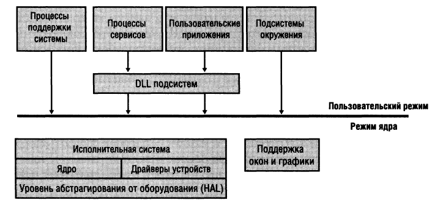
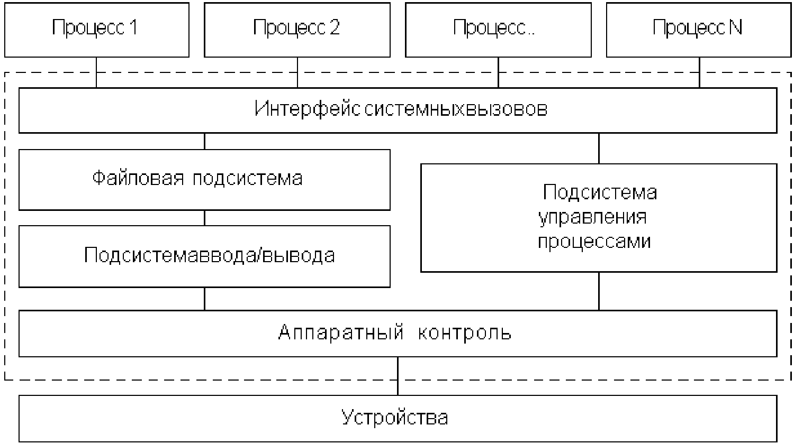

1 Введение
Степени двойки
| 2^0 | 1 |
| 2^1 | 2 |
| 2^2 | 4 |
| 2^3 | 8 |
| 2^4 | 16 |
| 2^5 | 32 |
| 2^6 | 64 |
| 2^7 | 128 |
| 2^8 | 256 |
| 2^9 | 512 |
| 2^{10} | 1024 |
| 2^{11} | 2048 |
| 2^{12} | 4096 |
| 2^{13} | 8192 |
| 2^{14} | 16384 |
| 2^{15} | 32768 |
| 2^{16} | 65536 |
| 2^{17} | 131,072 |
| 2^{18} | 262,144 |
| 2^{19} | 524,288 |
| 2^{20} | 1,048,576 |
| 2^{21} | 2,097,152 |
| 2^{22} | 4,194,304 |
| 2^{23} | 8,388,608 |
| 2^{24} | 16,777,216 |
| 2^{25} | 33,554,432 |
| 2^{26} | 67,108,864 |
| 2^{27} | 134,217,728 |
| 2^{28} | 268,435,456 |
| 2^{29} | 536,870,912 |
| 2^{30} | 1,073,741,824 |
| 2^{31} | 2,147,483,648 |
| 2^{32} | 4,294,967,296 |
Быстрая оценка больших чисел
2^{24} = 2^{10} \times 2^{10} \times 2^4 \approx 1000 \times 1000 \times 16 = 16 млн. (ошибка 4.6%)
2^{32} = 2^{10} \times 2^{10} \times 2^{10} \times 2^2 \approx 1000 \times 1000 \times 1000 \times 4 = 4 млрд. (ошибка 6.9%)
Метрические префиксы
| Показатель | Префикс |
| 10^{-3} | милли |
| 10^{-6} | микро |
| 10^{-9} | нано |
| 10^{-12} | пико |
| 10^{-15} | фемто |
| 10^{-18} | атто |
| 10^{-21} | зепто |
| 10^{-24} | йокто |
| Показатель | Префикс |
| 10^{3} | Кило |
| 10^{6} | Мега |
| 10^{9} | Гига |
| 10^{12} | Тера |
| 10^{15} | Пета |
| 10^{18} | Екза |
| 10^{21} | Зетта |
| 10^{24} | Йотта |
2 Общая архитектура ОС
2.1 Внутреннее устройство
Общая архитектура
Рассмотрим типовое строение операционной системы:
- Ядро (kernel) - центральная часть системы, осуществляет функции управления
- Драйверы устройств (drivers) - модули для взаимодействия с аппаратными устройствами
- Системные вызовы (system calls) - интерфейс с выполняющимися программами
- Командная оболочка (shell) - программа взаимодействия системы с пользователем
Командная оболочка
Командная оболочка необходима для реализации интефейса с пользователем
Виды интерфейса:
- CLI - Command Line Interface. Интерфейс командной строки. Являлся стандартом для большинства операционных систем XX века.
- GUI - Graphics User Interface. Графический интерфейс пользователя.
Интерфейс командной строки в основном стандартный и включает в себя возможность ввода и исполнения команд. Программы также запускаются на выполнение как команды. Графическая оболочка выполняет похожие функции, только пользователь оперирует графическими элементами: пиктограммами, панелями и т.д
Типичная командная строка (не примере FreeDOS) выглядит так:
Знание CLI абсолютно необходимо как системным администраторам, так и продвинутым пользователям в силу следующих обстоятельств:
- Некоторые настройки и ''рычаги'' управления системой доступны только из командной строки
- Командная строка допускает создание сценариев, которые упрощают решение многих системных задач и автоматизируют рутинную работу
- Командная строка бывает доступна в экстремальных случаях, когда доступ к GUI невозможен
- Многие операции выполняются быстрее и эффективнее именно в командной строке
Драйверы устройств
Драйверы - это модули ОС, отвечающие за взаимодействие с различными аппаратными устройствами.
Часто драйверы пишутся производителями аппаратуры, поскольку именно они реализуют микропрограммный уровень.
Системные вызовы
В любой операционной системе поддерживается некоторый механизм, который позволяет пользовательским программам обращаться за услугами ядра ОС. В ОС UNIX такие средства называются системными вызовами.
Системные вызовы (system calls) интерфейс между операционной системой и пользовательской программой. Они создают, удаляют и используют различные объекты, главные из которых процессы и файлы. Пользовательская программа запрашивает сервис у операционной системы, осуществляя системный вызов
2.2 Режимы выполнения
Процессор современного компьютера может находиться в одном из двух состояний:
- привилегированном
- непривилегированном
В привилегированном состоянии используется большее количество флагов и регистров, у программы, владеющей процессором в данный момент
больше возможностей. Непривилегированный режим характерен при выполнении обычных программ – процессор в этом режиме последовательно выполняет команды из стандартного набора.
Поэтому, важнейшими понятиями ОС является выполнение в режиме ядра и выполнение в режиме задачи. В первом случае ядро ОС берет управление на себя, переводит по прерыванию процессор в привилегированный режим и выполняет системные функции. Затем процессор переводится в непривилегированный режим, и управление возвращается программе
Повышение устойчивости операционной системы, обеспечиваемое переходом ядра в привилегированный режим, достигается за счет некоторого замедления выполнения системных вызовов. Системный вызов привилегированного ядра инициирует переключение процессора из пользовательского режима в привилегированный, а при возврате к приложению — переключение из привилегированного режима в пользовательский
Во всех типах процессоров из-за дополнительной двукратной задержки переключения переход на процедуру со сменой режима выполняется медленнее, чем вызов процедуры без смены режима
Почему опасно для системы установка драйвера неизвестного разработчика?
Перейдя в режим ядра, он получит полный доступ ко всему адресному пространству и ко всем данным операционной системы. Любая ошибка в теле такого драйвера способно ''подвесить'' Ос.
2.3 Архитектура Windows NT
Внутреннее упрощённое представление Windows NT:

Существует 4 типа пользовательских процессов:
- Процессы поддержки системы, например, вход в систему, поддержка сеансов
- Процессы сервисов, например диспетчер печати
- Пользовательские приложения
- Подсистемы окружения, для эмуляции других Ос, например MS-DOS
Компоненты режима ядра:
- Исполнительная система, содержащая базовые сервисы операционной системы (управление памятью, защита, ввод/вывод, взаимодействие между процессами)
- Ядро, содержащее низкоуровневые функции (планирование потоков, диспетчирезация прерываний)
- Драйверы устройств
- Уровень абстрагирования от оборудования (HAL) - слой, изолирующий ядро и другие компоненты от специфики оборудования
- Поддержка окон и графики
Более полное внутреннее представление Windows Nt:
3 Архитектура ядра
3.1 О ядре
Роль ядра
Ядро в операционной системы выполняет следующие важнейшие функции:
- Служит проводником информации, движущейся от нижних уровней системы к верхним и, наоборот
- Управляет созданием и выполнением процессов
- Распределяет ресурсы системы между исполянющимися процессами
- Организует ввод/вывод и работу с файлами
Виды ядер
По своему строению можно выделить операционные системы
- с монолитным ядром (Unix)
- с микроядром (Minix, QNX)
- с гибридным ядром (Windows NT)
Функции которые выполняет ядро наиболее часто востребованы, поэтому скорость их выполнения определяет производительность системы в целом. Для обеспечения высокой скорости работы ОС все модули ядра или большая их часть находятся постоянно в памяти, то есть являются резидентными.
3.2 Монолитное ядро
Монолитное ядро постоянно находится в оперативной памяти и при получении запроса на системное действие немедленно его обрабатывает.
Монолитное ядро представляет собой набор процедур, каждая из которых может вызвать каждую. Все процедуры работают в привилегированном режиме. Таким образом, монолитное ядро это такая схема операционной системы, при которой все ее компоненты являются составными частями одной программы, используют общие структуры данных и взаимодействуют друг с другом путем непосредственного вызова процедур. Для монолитной операционной системы ядро совпадает со всей системой.
Монолитное ядро старейший способ организации операционных систем. Примером систем с монолитным ядром является большинство Unix-систем.
Достоинства монолитного ядра:
- Высокая скорость отклика на системные события, высокая производительность системы
Недостатки:
- Большой размер занимаемой памяти
- Высокая требовательность к качеству кода, поскольку ошибка создаёт угрозу всей системе
3.3 Микроядро
Микроядерная архитектура является альтернативой монолитной.
Суть микроядерной архитектуры - в привилегированном режиме остается работать только очень небольшая часть ОС, называемая микроядром. Микроядро защищено от остальных частей ОС и приложений. В состав микроядра обычно входят машинно-зависимые модули, в также модули, выполняющие базовые функции ядра по управлению процессами, обработке прерываний, управлению виртуальной памятью, пересылке сообщений и управлению устройствами в/в. Все остальные функции ядра оформляются в виде приложений, работающих в пользовательском режиме.
Достоинства:
- Переносимость
- Расширяемость
- Надежность
- Поддержка распределенности
Недостатки:
- Меньшая по сравнению с монолитным ядром производительность
Высокая степень переносимости обусловлена тем, что весь машинно-зависимый код изолирован в микроядре.
Расширяемость присуща микроядерной ОС в очень высокой степени. В традиционных системах сложно удалить один слой и поменять его на другой по причине множественности и размытости интерфейсов между слоями. Обычно традиционные ОС позволяют динамически добавлять в ядро или удалять только драйвера устройств. При микроядерном подходе конфигурировать ОС не вызывает никаких проблем и не требует особых мер - достаточно изменить файл с начальной конфигурации системы или остановить ненужные серверы.
Использование микроядра повышает надежность ОС. Каждый сервер выполняется в виде отдельного процесса в своей собственной области памяти и таким образом защищен от других серверов. Если отдельный сервер терпит крах, то он может быть просто перезапущен. И кроме того небольшой размер ядра позволяет снизить вероятность возникновения ошибок.
Модель с микроядром хорошо подходит для реализации распределенных вычислений, так как использует механизмы, аналогичные сетевым: взаимодействие клиентов и серверов путем обмена сообщениями. Серверы микроядерной архитектуры могут работать как на одном так и на разных системах.
Производительность. При классической организации ОС выполнение системного вызова сопровождается двумя переключениями режимов, а при микроядерной - четыре. При прочих равных условиях классическая модель будет всегда быстрее чем микроядерная.
3.4 Архитектура ядра
Состав ядра
Рассмотрим общую архитектуру ядра:

- Подсистема управления процессами - центральная часть ядра, модуль для планирования и непосредственного управления процессами.
- Подсистема ввода/вывода - отвечает за передачу данных от программ к аппаратуре и, наоборот. Она обеспечивает необходимую буферизацию данных и взаимодействует с драйверами устройств.
- Файловая подсистема обеспечивает единый интерфейс доступа к данным, расположенных как на дисковых накопителях, так и в оперативной памяти. Она контролирует права доступа к объектам и программам
- Интерфейс системных вызовов - звено для обслуживания запросов со стороны программ на различные действия с ресурсами и аппаратной частью.
Состав ядра современной системы UNIX:
4 Механизмы ОС
4.1 Прерывания
Прерывания представляют собой механизм, позволяющий координировать параллельное функционирование отдельных устройств вычислительной системы и реагировать на особые состояния, возникающие при работе процессора, то есть прерывание — это принудительная передача управления от выполняемой программы к системе (а через нее — к соответствующей программе обработки прерывания), происходящая при возникновении определенного события.
Основная цель введения прерываний — реализация асинхронного режима функционирования и распараллеливание работы отдельных устройств вычислительного комплекса.
Механизм прерываний реализуется аппаратно-программными средствами.
Механизм обработки прерываний включает несколько шагов:
- Установление факта прерывания и его идентификация
- Запоминание состояния прерванного процесса
- Передача управления на подпрограмму обработки прерывания
- Сохранение дополнительной информации
- Выполнение обработчика
- Восстановление информации прерванного процесса
- Возврат в прерванную программу
Шаги 1-3 реализуются аппаратно, 4-7 - программно.
Классификация прерываний
- Синхронные (внутренние)
- Асинхронные (внешние)
- Программные
Внешние прерывания могут быть:
- от таймера
- от внешних устройств ввода/вывода
- от нарушений по питанию
- от действий пользователя
- от другой вычислительной системы
Внутренние прерывания вызываются событиями, которые связаны с работой процессора и являются синхронными с его операциями. Примерами являются следующие запросы на прерывания:
- при нарушении адресации
- при появлении кода недопустимой операции
- при делении на ноль
- при переполнении
- при обнаружении ошибок в работе устройств
Кроме того, существуют программные прерывания, которые вызываются не аппаратурой а вычислительными процессами.
Важный тип аппаратных прерываний прерывания таймера, которые генерируются периодически через фиксированный промежуток времени. Прерывания таймера используются операционной системой при планировании процессов
Приоритеты прерываний
В зависимости от необходимости системы реагировать на прерывания, всем прерываниям назначается приоритет
4.2 Системный таймер
Системный таймер, часто реализуемый в виде быстродействующего регистра-счетчика, необходим операционной системе для выдержки интервалов времени.
Для этого в регистр таймера программно загружается значение требуемого интервала в условных единицах, из которого затем автоматически с определенной частотой начинает вычитаться по единице. Частота «тиков» таймера, как правило, тесно связана с частотой тактового генератора процессора. (Не следует путать таймер ни с тактовым генератором, который вырабатывает сигналы, синхронизирующие все операции в компьютере, ни с системными часами — работающей на батареях электронной схеме, — которые ведут независимый отсчет времени и календарной даты.)
При достижении нулевого значения счетчика таймер инициирует прерывание, которое обрабатывается процедурой операционной системы. Прерывания от системного таймера используются ОС в первую очередь для слежения за тем, как отдельные процессы расходуют время процессора. Например, в системе разделения времени при обработке очередного прерывания от таймера планировщик процессов может принудительно передать управление другому процессу, если данный процесс исчерпал выделенный ему квант времени.
4.3 Ресурсы
Ресурсы ОС
Важнейшей функцией операционной системы является организация рационального использования всех аппаратных и программных ресурсов системы.
К основным ресурсам могут быть отнесены:
- процессоры
- память
- внешние устройства
- данные и программы
Приложения используют совместно не только процессор, но и другие ресурсы компьютера: оперативную память, устройства ввода/вывода, данные
4.4 Исключительные ситуации
Исключительная ситуация (exception) - событие, возникающее в результате попытки выполнения программой недопустимой команды, доступа к ресурсу при отсутствии достаточных привилегий или обращения к отсутствующей странице памяти.
Исключительные ситуации так же, как и системные вызовы, являются синхронными событиями, возникающими в контексте текущей задачи.
Исключительные ситуации можно разделить на
- исправимые
- неисправимые.
К исправимым относятся такие исключительные ситуации, как отсутствие нужной информации в оперативной памяти. После устранения причины исправимой исключительной ситуации программа может продолжить выполнение. Возникновение в процессе работы операционной системы исправимых исключительных ситуаций является нормальным явлением.
Неисправимые исключительные ситуации обычно возникают в результате ошибок в программах. Обычно операционная система реагирует на такие ситуации завершением программы, вызвавшей исключительную ситуацию.
4.5 Файлы
Файлы предназначены для хранения информации на внешних носителях, то есть, принято, что информация, лежащая, например, на диске, должна находиться внутри файла. Обычно под файлом понимают часть пространства на носителе информации, имеющую имя.
Главная задача файловой системы (file system) - скрыть особенности ввода-вывода и дать программисту простую абстрактную модель файлов, независимых от устройств. Для чтения, создания, удаления, записи, открытия и закрытия файлов также имеется обширная категория системных вызовов (create, delete, open, close, read, write ).. Пользователям хорошо знакомы такие понятия, связанные с организацией файловой системы, как каталог, текущий каталог, корневой каталог, путь, для манипулирования которыми в операционной системе имеются системные вызовы.
Вопросы для самоконтроля
- Как быстро оценить значение большого числа?
Список литературы
- Богатырёв А. Язык С в системе Unix.. 111.
- Подбельский В.В., Фомин С.С. Программирование на языке С.. 111.
- Голуб А. Правила программирования на С и С++.. 111.
- Хэзфилд Р., Кирби Л. Искусство программирования на С.. 111.
- Дейтел Х., Дейтел П. Как программировать на С.. 111.
- Керниган Б.,Ритчи Д. Язык С.. 111.
© 2012 Штанюк А.А.